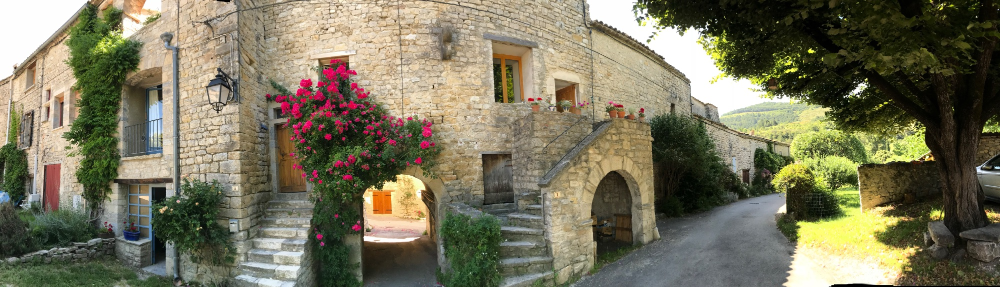

Notre
Steuph
Mémoires d'un village
↓

Mémoires d'un village
On peut se sentir d'ici sans y vivre. Ce site est né de cet attachement — celui des familles qui ont grandi à Steuph, qui y reviennent, qui y ont leurs morts et leurs racines, qui s'y installent, qui y séjournent. Un village de la Drôme Provençale, quatre-vingts âmes en hiver, beaucoup plus au fil des saisons, des siècles de mémoire.
La lettre de Notre Steuph
Actualités du village, mémoires des familles — quelques fois par an.
Jamais de spam · Désinscription en un clic.